Sprint Layout 6. Функции рисования
Все элементы рисования плат расположены на панели слева.
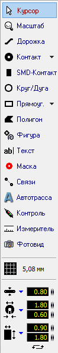
Курсор
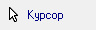
Горячая клавиша "Esc".
Инструмент "по-умолчанию". Используется для выбора элементов на рабочем поле. Сброс любого инструмента в "Курсор" производится нажатием на правую кнопку мыши.
Масштаб
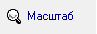
Горячая клавиша "Z".
Курсор принимает вид лупы. Нажатием на левую кнопку мыши на рабочем поле происходит увеличение масштаба платы, на правую - уменьшение. Также с зажатой левой кнопкой мыши можно выбрать участок платы, который необходимо увеличить.
Дорожка
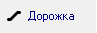
Горячая клавиша "L".
Инструмент для рисования дорожки заданной ширины. Значение ширины (в мм) задается перед началом рисованием в специальном поле:
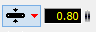
Кнопка слева открывает подменю часто используемых, так называемых "любимых" ширин дорожек. Можно добавить новое значение или удалить существующее:
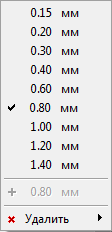
Примечание - Пункт добавления нового значения становится активным лишь в случае, если текущего значения ширины дорожки нет в списке.
После установки ширины, выбрав инструмент "Дорожка", можно приступать непосредственно к рисованию дорожки. Для этого в рабочем поле следует выбрать точку, откуда будет начинаться линия, щелкнуть левой кнопкой мыши и вести линию в точку, где она должна заканчиваться.
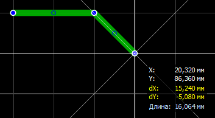
Вид изгиба дорожки перебирается нажатием клавиши "Пробел". Доступны пять вариантов:
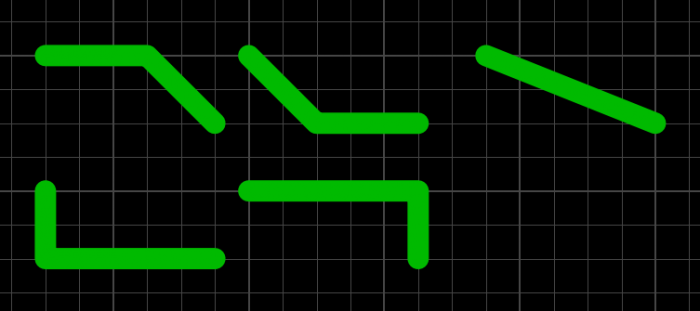
При нажатии клавиши "Пробел" с зажатой клавишей "Shift" перебор осуществляется в обратном порядке.
В процессе рисования можно при необходимости фиксировать линию нажатием на левую кнопку мыши, формируя тем самым необходимую форму дорожки.
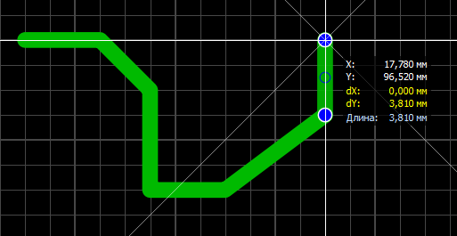
Значение длины отображается для последних не зафиксированных сегментов.
Зажав клавишу "Shift" можно временно сделать шаг сетки в два раза меньше, а зажав "Ctrl" - отключить привязку курсора к сетке.
Зафиксировав последнюю точку дорожки, можно закончить рисование дорожки нажав на правую кнопку мыши. Дорожка завершается и курсор готов к рисованию следующей дорожки.
При выборе нарисованной линии она подсвечивается розовым цветом и панель свойств меняет вид, отображая параметры дорожки:
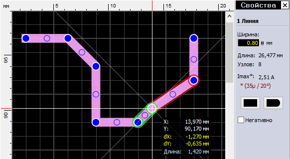
В этой панели можно изменить значение ширины линии, посмотреть ее длину, количество узлов и подсчитанный максимально допустимый ток.
Примечание - Параметры расчета (толщина слоя меди и температура) настраиваются в разделе "Imax" основных настроек программы.
Синими кругами отображены узлы дорожки. А еще в середине каждого сегмента дорожки видны синие окружности - так называемые виртуальные узлы. Потянув за них курсором мыши можно превратить их в полноценный узел. Обратите внимание, что в процессе редактирования один сегмент подсвечивается зеленым цветом, а другой - красный. Зеленый цвет означает то, что сегмент расположен горизонтально, вертикально или под углом 45°.
Концы дорожек по умолчанию круглые, но на панели свойств имеются две кнопки, делающие их прямоугольными (обратите внимание на левый конец дорожки).
Если одна трасса представлена на плате двумя раздельными дорожками и их конечные узлы расположены в одной точке, то дорожки можно соединить.
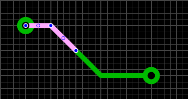
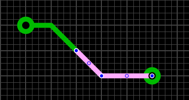
Для этого следует щелкнуть правой кнопкой мыши по конечному узлу и выбрать в контекстном меню пункт "Соединить линию". Трасса станет цельной.
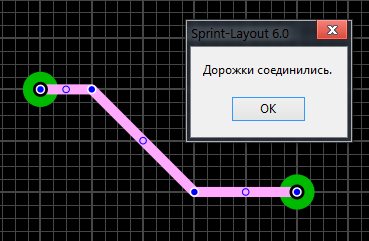
Галочка "Негативно" формирует из дорожки вырез на полигоне Авто-земли:
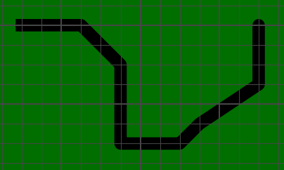
Контакт
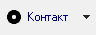
Горячая клавиша "P".
Инструмент создания контактных площадок для выводов компонентов. Нажатием на маленький треугольник слева открывается меню контактов, где можно выбрать необходимую форму контакта:
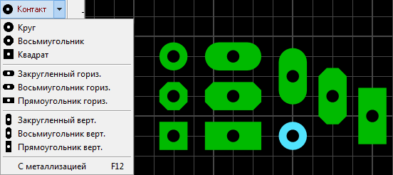
Пункт "С металлизацией" делает контактную площадку на всех слоях меди, а отверстие металлизированным. При этом цвет контакта с металлизированным отверстием отличается от не металлизированных (обратите внимание на круглый голубой контакт). Горячая клавиша F12 включает/отключает металлизацию у любого выбранного контакта.
Формы контактных площадок не ограничиваются этим списком - их можно сделать любой формы. Для этого необходимо разместить обычный контакт (1), а вокруг него нарисовать площадку нужной формы (2). Причем следует не забывать о маске - необходимо вручную открыть от нее весь контакт (3) (о маске см. ниже).
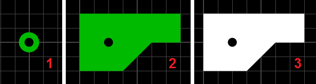
Как и у инструмента "Дорожка" у данного инструмента внизу есть свои настройки:
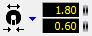
Верхнее поле задает диаметр контактной площадки, нижнее - диаметр отверстия. Кнопка слева открывает подменю часто используемых размеров контактов. Можно добавить новое значение или удалить существующее:
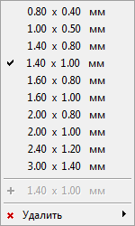
Задав необходимые значения, выбираем инструмент "Контакт" и левым щелчком мыши выполняем размещение контакта в нужной точке рабочего поля.
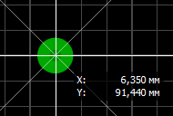
Параметры любого выбранного контакта (или группы контактов) всегда можно изменить на панели свойств:
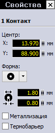
Последний пункт с галочкой включается термобарьер у контакта. Подробнее рассмотрим эту функцию в следующей части курса.
Если контактная площадка не имеет гарантийного пояска, т.е. диаметр отверстия равен диаметру контактной площадки, то она отображается следующим образом:
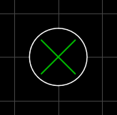
SMD-контакт
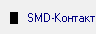
Горячая клавиша "S".
Инструмент создания прямоугольных контактов для компонентов поверхностного монтажа. Настройки:
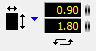
Справа поля для ввода значений ширины и высоты контакта. Под ними кнопка смены значений в этих двух полях. Кнопка слева открывает подменю часто используемых размеров контактов.
Задав необходимые размеры и выбрав данный инструмент, контакт можно размещать на рабочем поле:
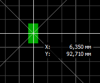
Для SMD-контакта также доступна функция термобарьера на панели свойств, с тем лишь отличием, что настраивается она только на одном слое.
Круг/Дуга
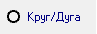
Горячая клавиша "R".
Примитивы - окружность, круг, дуга.
Выбираем точку размещения и зажав левую кнопку мыши двигаем курсор в сторону, задавая тем самым диаметр окружности.
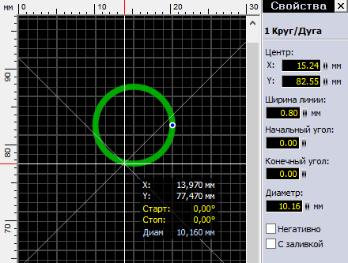
Заметьте, что панель свойств в процессе рисования содержит информацию о создаваемой окружности. Отпустив левую кнопку мыши, мы завершим создание окружности. Выделив ее инструментом "Курсор" мы сможем редактировать свойства окружности в панели свойств - в частности задать координаты центра, ширину линии и диаметр, а также углы начальной и конечной точек, если хотим превратить окружность в дугу.
Превратить окружность в дугу также можно потянув курсором за единственный имеющийся на окружности узел:
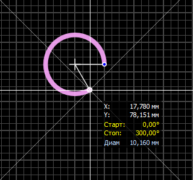
Галочка "С заливкой" делает из окружности круг, заливая внутреннюю область, а "Негативно" по аналогии с дорожкой превращает элемент в вырез на полигоне Авто-земли.
Полигон
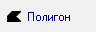
Горячая клавиша "F".
Инструмент создания участков любой формы. Рисование происходит дорожкой с заданной шириной:
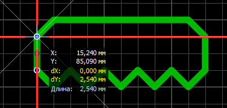
После завершения полигон отображается с заливкой и, при его выборе, возможно редактирование узлов (так же как в инструменте "дорожка"):
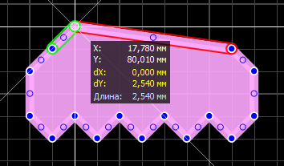
Панель свойств содержит еще некоторые настройки:
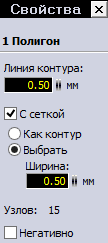
Можно изменить ширину линии контура, увидеть количество узлов, сделать из полигона вырез на заливке Авто-земли (галочка "Негативно"), а также изменить вид заливки полигона со сплошного на сетчатый.
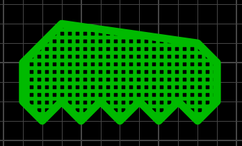
Толщину линий сетки можно оставить как у контура полигона, либо задать свое значение.
Текст
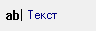
Горячая клавиша "T".
Инструмент создания текстовых надписей. При его выборе открывается окно настроек:
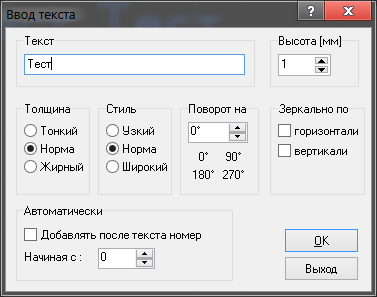
- Текст - поле ввода необходимого текста;
- Высота - высота строки текста;
- Толщина - три различных вида толщины текста;
- Стиль - стиль текста;
- Поворот на - повернуть текст на определенный угол;
- Зеркально по - отразить текст по вертикали или горизонтали;
- Автоматически - дополнительно добавлять номер после текста, начиная с определенного значения.
Три вида толщины текста и три вида стиля дают девять вариантов начертания (правда некоторые получаются одинаковыми):
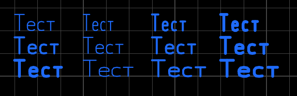
Примечание - По умолчанию минимально возможная толщина текста ограничена на уровне 0,15 мм. Если толщина получается слишком маленькой, то высота текста автоматически увеличивается. Это ограничение можно отключить в меню настроек программы.
Прямоугольник
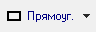
Горячая клавиша "Q".
Инструмент создания прямоугольного контура или прямоугольного полигона. Для рисования следует щелкнуть левой кнопкой мыши в рабочем поле и, не отпуская, вести курсор в сторону, задавая форму прямоугольника.
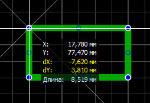
Создание прямоугольника завершится после того как кнопка будет отпущена.
Как я уже сказал, доступны два вида прямоугольников - в виде контура из дорожек и с заливкой.
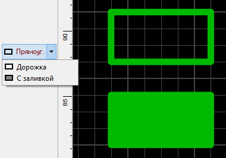
Причем прямоугольник в виде контура есть ни что иное как обыкновенная дорожка, проложенная в форме прямоугольника, а прямоугольник с заливкой - полигон. Т.е. после создания редактировать их можно как дорожку и полигон соответственно.
Фигура
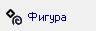
Горячая клавиша "N".
Инструмент создания специальных фигур.
Первый вид фигуры - правильный многоугольник:
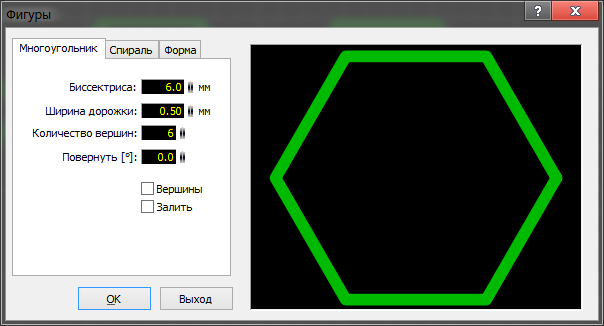
Доступны настройки биссектрисы - расстояния от центра до вершин, ширины дорожки, количества вершин, угла поворота.
Галочка "Вершина" соединяет противоположные вершины между собой (средний рисунок), "Залить" - закрашивает внутреннее пространство фигуры (правый рисунок):
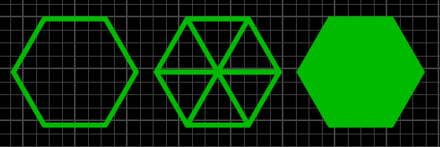
Следует отметить, что в результате получаются элементы состоящие из дорожек и полигона. Поэтому и редактируются они соответствующим образом.
Второй вид фигуры - спираль:
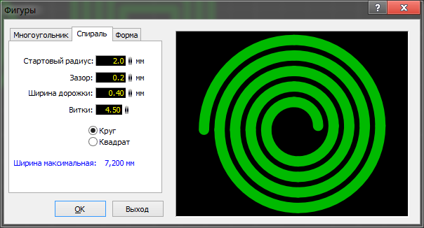
Задав параметры, можно создать круглую или квадратную спираль:
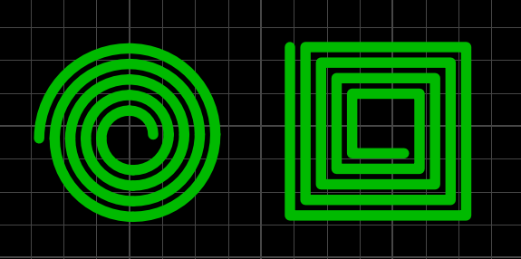
Круглая спираль состоит из четвертинок окружностей различных диаметров, а прямоугольная спираль - дорожка.
Третий вид фигуры - форма:
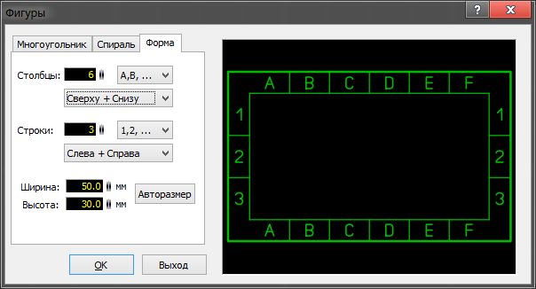
Настройки позволяют задать количество строк и столбцов, вид нумерации ее расположение и общие размеры формы. Результат:
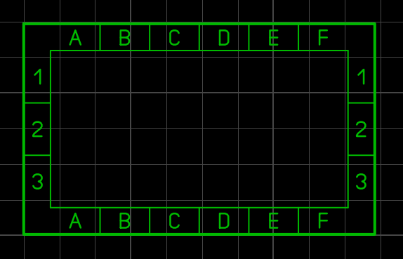
Форма также состоит из более простых примитивов - дорожка и текст.
Маска
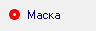
Горячая клавиша "O".
Инструмент для работы с паяльной маской. При его использовании плата меняет расцветку:
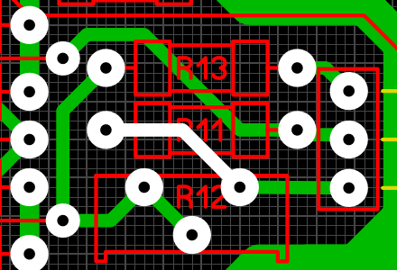
Белый цвет элементов означает, что участок будет открыт от маски. По умолчанию от маски открыты только контактные площадки. Но нажатие левой кнопкой мыши по любому элементу текущего слоя меди открывает его от маски (на рисунке я открыл от маски дорожку в центре рисунка). Повторное нажатие обратно закрывает.
Связи
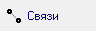
Горячая клавиша "C".
Инструмент позволяет установить виртуальную связь, не разрывающуюся при перемещении или повороте компонентов, между любыми контактами на плате.
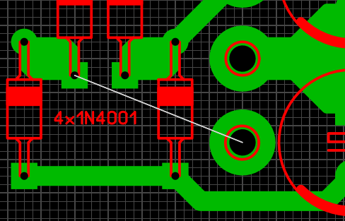
Для удаления связи нужно щелкнуть по ней левой кнопкой мыши при активном инструменте "Связь".
Автотрасса
Горячая клавиша "A".
Примитивный автотрассировщик. Позволяет трассировать расставленные "Связи".
Для этого следует задать параметры трассировки (ширину дорожки и зазор) и, наведя курсор на связь (она подсветится), щелкнуть левой кнопкой мыши. Если возможность прокладки трассы с заданными параметрами имеется, то она будет проложена:
При этом автоматически проложенная трасса будет отображаться с серой линией по центру дорожки. Это позволяет отличить их от трасс, проложенных вручную.
Повторный щелчок левой кнопкой мыши при активном инструменте "Автотрасса" по автоматически разведенной трассе удаляет ее и возвращает связь контактов.
Контроль
Горячая клавиша "X".
Инструмент позволяет увидеть разведенную цепь целиком, подсветив ее:
Измеритель
Горячая клавиша "M".
Зажатой левой кнопкой мыши выделяется прямоугольная область, а в специальном окне отображаются текущие координаты курсора, изменение координат по двум осям и расстояние между начальной и конечной точкой выделения, угол наклона диагонали прямоугольника выделения.
Фотовид
Горячая клавиша "V".
Удобный инструмент, позволяющий посмотреть как будет выглядеть плата после изготовления:
Переключатель "Верх/Низ" меняет сторону платы для отображения.
Примечание - Нижний слой при отображении зеркалится по сравнению с отображением при трассировке. Инструмент "Фотовид" работает аналогично тому, что если бы Вы крутили в руках готовую плату.
Галочка "С компонентами" включает отображение слоя маркировки, а галочка "Полупрозрачный" делает плату полупрозрачной - сквозь нее просвечивает нижний слой:
Два выпадающих меню - "Плата" и "Паяльная маска" меняют цвет маски и цвет непокрытых маской контактов:
Примечание - Пункт "---" отображает контакты в виде покрытых маской.
Источники
cxem.net - Sprint Layout 6. Часть 2 - Функции рисования. Макросы и библиотека компонентов